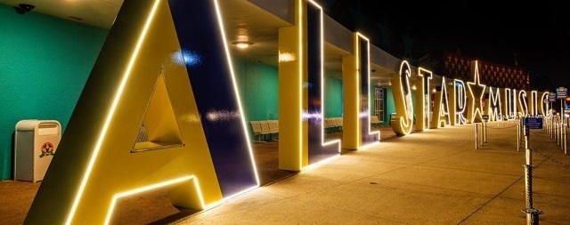

Serviços

Portaria
Na entrada do hotel, é possível comprar ingressos para o
Disney Theme Park e Disney Water Park,
além de reservas em restaurantes.
Lavanderias
- Além da lavagem à seco, possuímos o serviço para retirarmos suas roupas no quarto.
- Caso não queira o serviço de retirada, existe a Lavanderia self-service por todo Disney´s All-Star Music Resort.
Cuidamos do seu Filho
Existem vários serviços para cuidarmos de seus filhos, mesmo você não estando por perto, ele irá se divertir.
Faça compras
No edifício Melody Hall possui vários produtos Disney
e suprimentos certos para suas férias,
visite também o Maestro Mickey.
Entregas no seu quarto
No Disney´s All-Star Music Resort, possui entregas noturnas
de pizza, sanduíches, salada, sobremesa e bebidas
diretamente em seu quarto.
Você tem necessidades especiais? Não se preocupe!
- O Disney All-Star Music Resort possui quartos projetados
para hóspedes portadores de
necessidades especiais, incluindo banheiros para
cadeirantes
- Quartos exclusivos para quem tem deficiencia visual
Dentro do quarto você tem tudo e mais um pouco!
- TV a cabo com várias programações diferentes, inclusive do Disney
- Cercadinho para colocar seu bebê
- Estacionamento exclusivo para seu carro
- Acesso à Internet via cabo e Wi-fi
- Pentes, secadores, sabonete
- Cofre protegido por senha eletrônica
Voltar para o topo
Disney's All-Star Music Resort (407) WDI-SNEY ou (407) 934-7639
Mapa do site